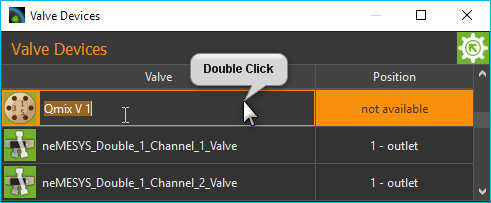
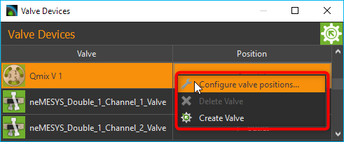
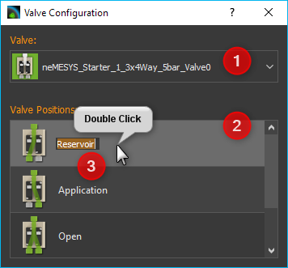
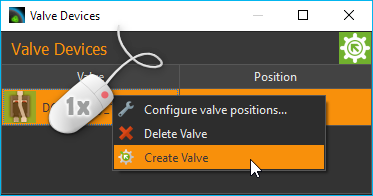
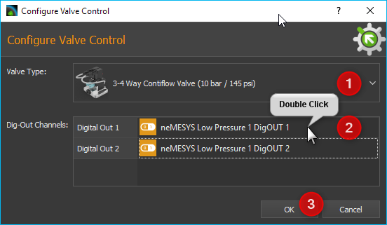
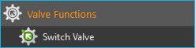
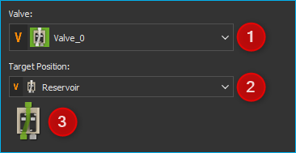

Ventil Plugin
Einführung
Das Ventil Plugin dient zur Steuerung der QmixV Ventil Module oder von Ventilen, die Teil anderer Geräte sind (z.B. Ventile der Nemesys Spritzenpumpen).

CETONI QmixV Ventilmodule
Ventilgeräte, die Teil anderer Geräte sind (z.B. Ventile, die auf Nemesys Spritzenpumpen montiert sind)
Unterstützte Ventile von anderen Herstellern (z.B. VICI-Ventile)
Ventil-Geräteliste
Das Plugin besteht im Wesentlich aus der Ventil-Geräteliste (siehe Abbildung oben) die als Werkzeugfenster in der Qmix Oberfläche angezeigt wird.

Das Fenster können Sie durch Anklicken und Ziehen der Titelleiste jederzeit an eine andere Position in der grafischen Oberfläche verschieben oder aus der Oberfläche als separates Fenster herauslösen.
Die Ventil-Geräteliste zeigt ihnen alle verfügbaren Ventilgeräte in Tabellenform an. In der linken Tabellenspalte wird der Name des Ventils und die aktuelle Ventilposition grafisch angezeigt. In der rechten Spalte sehen Sie die Bezeichnung der aktuellen Ventilposition.
Ventilname ändern
Sie können den Namen des Ventils jederzeit ändern und z.B. einen Namen vergeben, der zu Ihrer speziellen Anwendung passt. Ändern Sie den Namen mit folgenden Schritten:
Klicken Sie doppelt in die Tabellenzelle mit den Namen den Sie ändern möchten.
Geben Sie den neuen Namen in das Editierfenster ein, welches nun eingeblendet wird (siehe Abbildung).
Beenden Sie Ihre Eingabe durch Drücken der Return-Taste.
Ventilposition umschalten
Die Ventilposition können Sie ebenfalls in der Modulliste umschalten. Gehen Sie dafür wie folgt vor:
Klicken Sie doppelt in die Tabellenzelle in der die Ventilposition angezeigt wird.
Wählen Sie in der Auswahlbox die nun angezeigt wird die gewünschte Ventilposition aus (siehe Abbildung unten).
Bestätigen Sie die Auswahl durch Drücken der Return-Taste oder klicken Sie auf eine andere Tabellenzelle um die Auswahlbox zu schließen.

Das Ventil wird nun in die neue Ventilposition geschaltet.
Ventilpositionen benennen
Sie können in der Software jeder Ventilposition einen individuellen Namen geben und so die Bezeichnung der Ventilpositionen entsprechend Ihrer Anwendung konfigurieren. Um den Namen der Ventilposition zu ändern, führen Sie die folgenden Schritte durch:
Klicken Sie mit der rechten Maustaste in die Tabellenzeile von dem Ventil, dessen Positionen Sie umbenennen möchten.
In dem Kontextmenü welches nun angezeigt wird, wählen Sie den Menüpunkt Configure valve positions….
Es wird nun ein Konfigurationsdialog angezeigt (Abbildung unten) der aus einer Ventilauswahlbox ❶ besteht und aus der Liste der Ventilpositionen ❷.
Klicken Sie zur Benennung einer Ventilposition doppelt auf die Tabellenzeile dieser Position.
Es wird nun ein Editierfenster in die Tabellenzelle eingeblendet ❸, in den Sie den neuen Namen der Ventilposition eingeben können.
Bestätigen Sie die Eingabe durch Drücken der Return-Taste.
Wenn Sie alle Ventilpositionen benannt haben, können sie den Konfigurationsdialog schließen.
Ab jetzt werden die Ventilpositionen in der Software in allen Bereichen stets mit den neuen Namen angezeigt.
Ventile erstellen
Sie können die Ventile von CETONI über einen oder mehrere digitale Ausgänge steuern. Wenn Sie Ihr Ventil an die entsprechenden digitalen Ausgänge angeschlossen haben, müssen Sie es in der Software konfigurieren.
Als erstes sollten Sie dafür das Fenster der I/O Kanäle öffnen, und durch manuelles Schalten der digitalen Ausgänge testen, ob das Ventil korrekt angeschlossen ist und schaltet.

Klicken Sie dafür bei dem entsprechenden Kanal auf die LED in der Spalte On um die digitalen Kanäle aus- und wieder einzuschalten. Überprüfen Sie, ob das Ventil beim Umschalten des digitalen Ausgangs geschaltet wird. Wird das Ventil nicht geschaltet, ist es entweder falsch angeschlossen oder Sie schalten den falschen Ausgang. Wenn das Ventil schaltet, können Sie mit der Erstellung des Ventils in der Software fortfahren.
Klicken Sie dafür mit der rechten Maustaste in die Liste der Ventile und wählen Sie dann aus dem Kontextmenü den Eintrag .
Es wird nun der Dialog zu Erstellung und Konfiguration eines Ventils angezeigt.
In dem Dialog wählen Sie als erstes im Feld Valve Type ❶ den Typ des Ventils aus, welches Sie angeschlossen haben. Danach müssen Sie für das Ventil in der Tabelle Dig-Out Channels die digitalen Ausgänge konfigurieren. Je nach Ventiltyp können das einer oder mehrere Ausgänge sein. Um einen Ausgang zu konfigurieren, klicken Sie doppelt in die Tabellenzelle ❷ für diesen Kanal und wählen dann aus der Liste den entsprechenden digitalen Ausgang aus. Die OK-Schaltfläche ❸ wird erst freigeschaltet, wenn für jeden Schalteingang des Ventils der entsprechende digitale Ausgangskanal konfiguriert wurde. Sie können dann die Konfiguration durch Klick auf OK abschließen.
In der Liste der Ventile erscheint nun das soeben erstellte Ventil.
Ventile, die Sie mit der Create Valve-Funktion erstellen, erhalten das
Präfix DO_ um zu kennzeichnen, dass es Ventile sind, welche durch
digitale Ausgänge gesteuert werden.
Tipp
Ventile, die Sie mit der Create Valve-Funktion erstellt haben
können Sie in der
Ventilliste an dem Präfix DO_ erkennen.
Ventile löschen
Ventile, die Sie dynamisch in der Software erzeugt haben, z.B. mit der Funktion Create Valve (siehe vorheriger Abschnitt), können über das Kontextmenü wieder aus der Ventilliste gelöscht werden. Klicken Sie dafür mit der rechten Maustaste in die Zeile des Ventils, welches Sie löschen möchten und wählen Sie dann den Menüpunkt .

Wichtig
Ventile, die mit dem Gerätekonfigurator erzeugt und konfiguriert wurden, oder die Bestandteil von anderen Geräten sind, können mit Delete Valve nicht gelöscht werden.
Ventil Script Funktionen
Das Ventil-Plugin enthält eine Script Funktion für das Umschalten der Ventile aus einem Script heraus.
Funktion Ventil umschalten - Switch Valve

Verwenden Sie diese Funktion zum Umschalten der Ventilposition. Im Konfigurationsbereich dieser Funktion können Sie das Ventilmodul auswählen ❶ und die Zielposition ❷ an die das Ventil geschaltet werden soll. Das Vorschaubild visualisiert die ausgewählte Zielposition ❸.
Beide Auswahlboxen unterstützen die Verwendung von Variablen. Das heißt, in der Geräteauswahlbox ❶ können Sie eine Variable verwenden, die eine Ventilgerätereferenz enthält. In der Zielpositionsauswahlbox ❷ können Sie eine Skriptvariable verwenden, die einen Zielpositionsindex enthält.
Das folgende Beispiel zeigt ein Skript, das zwei Variablen ❶ erstellt.
Die Variable $ProcessValve speichert die Gerätereferenz auf das Ventilgerät
Valve_0. Die Variable $RefillPosition speichert die Zielposition des
Ventils für das Nachfüllen der Spritze.
Diese Variablen werden dann im Skript Switch Valve ❷ für die Definition von Valve und Target Position verwendet.
Unterstützte VICI-Ventile
Das Valve Plugin unterstützt VICI-Ventile mit USB- oder RS-232-Schnittstelle.
Tipp
Bei der Verwendung eines Ventils mit RS-232-Schnittstelle kann es zu Problemen bei der Kommunikation kommen, wenn Sie das Ventil über eine physische RS-232-Schnittstelle an Ihrem PC anschließen.
Verwenden Sie stattdessen einen USB-zu-Seriell-Adapter und schließen Sie das Ventil darüber per USB an Ihren PC an!
Die folgende Liste zeigt alle Typen von VICI-Ventilen, die von der Software unterstützt werden:
10-Positionen-Selektionsventil (SD) (z.B. Niedrigdruck, Hochdruck) |
|
|
6-Positionen-Selektionsventil (SD) (z.B. Niedrigdruck, Hochdruck) |
|
6-Port Injektionsventil (z.B. GC Einspritzdüsen, HPLC-Einspritzdüsen) |


{kind=link}